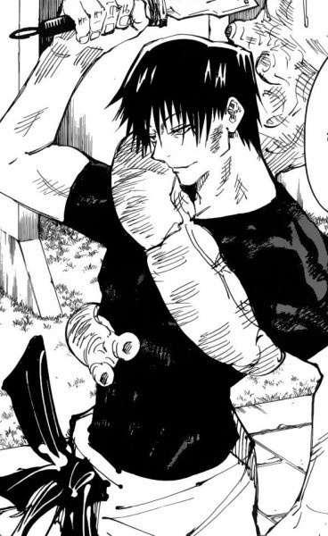

10년 동안 만화영화 좋아한 사람
뭐에 대해 쓸지 생각해보다가 제가 여태까지 봤던 애니들 추천 목록을 작성해보기로 하였습니다. 12년 동안 보았던 애니들의 감상평을 적어보았습니다. 극히 주관적이므로 주의가 필요합니다. 제 취향이 다분히 첨가되어있습니다. 흥미를 가져주신다면 정말 감사합니다. 삽입한 이미지는 각 작품별 저의 최애들입니다. 앍어주셔서 감사합니다.
SPORTS
대부분 청춘
쿠로코의 농구
본격 판타지 농구물. 농구가 판타지래봤자 얼마나 판타지겠어? 하시는 순간 1화부터 인간이 사라집니다. 막 공을 던지는데 그게 다 들어가고.. 2010년대 애니 좋아하는 사람들 중에 이 작품 안 본 사람은 거의 없다고 감히 말할 수 있는 작품 중 하나입니다. 장르 대통합을 이뤘던 거대 장르. 현재도 굿즈가 꾸준히 나오고 있습니다. 주연들 머리카락색이 무지개색이에요. 그리고 사륜안 마냥 눈을 쓰는 사람이 등장하기도 합니다. 캐릭터들마다 개성이 뚜렷해서 볼만 합니다. 소년 청춘 스포츠 만화의 정석을 따라가는 만화.
하이큐!
그나마 현실적인 배구 만화. 워낙 유명해서 한 번쯤은 카라스노 고등학교라는 이름을 들어보셨을 것 같기도 합니다. 하이큐의 매력은 여타 스포츠 만화들이 주인공들과 주연급 조연들에게만 치중하는 반면, 하이큐에는 배구를 한 모든 이들을 위한 에피소드가 준비되어있다는 걸 들 수 있습니다. 천재를 이기려하는 소년의 이야기..? 근데 이 천재가 노력도 많이 합니다. 얼굴도 공식미남이고요. 주인공이 중학교 때 이 천재에게 져서 고등학교에 올라가면 반드시 널 이기겠다, 하고 어렸을 때부터 동경해온 고등학교에 갔는데 그 천재가 같은 학교에 와서 팀메이트가 되어버리면서 시작하는 이야기입니다. 그리고 이 둘이 콤비가 되고 다양한 특징을 가진 강팀들과 대결하고 지고 이기면서 성장해가는 것이 주내용입니다. 주인공의 이름엔 해가 들어가고 콤비인 천재의 이름엔 그림자가 들어가며, 주인공 콤비와 앙숙인 같은 학년 소년의 이름엔 달이 들어갑니다. 이름부터 작가가 작정하고 낸 작품입니다. 스토리라인 굉장히 탄탄해요! 꼭 보시길 추천합니다!
소년 만화
특이 세계관
주술회전
표절 논란 있었던 작품입니다. 모르고 보면 무난히 재밌습니다.(표절이지만...) 인간의 감정에서 태어나는 '주령'을 감정을 이용한 '주술'로 물리치는 그런 이야기입니다. 세계관이 밝지는 않아요. 이번에 주술회전 본편의 외전편? 프리퀄인 주술회전0이 극장판 개봉하여 아직도 상영 중인 것으로 알고 있습니다.(현재 2022/4/1 기준) 사실 액션씬이라든가 구도 같은 건 표절 때문에 가끔씩 짜게 식는데 대사 하나만큼은 정말.. 생각이 많아지게 잘 쓰는 것 같습니다. 그 예로는 '무례하긴, 순애야.'(이건 딱 보면 뭔 중2병 같은 대사야. 라고 하실 수도 있는데 그 앞뒤맥락을 꼭 한 번 봐주세요. 미친 놈입니다. 순애에 미친 찐광기.) '사랑은 가장 왜곡된(뒤틀린) 형태의 저주지.'(미친 대사. 아무리 생각해도 정말 미친 대사.) 그리고 캐릭터를 인기 끌게 잘 짰습니다. 능글+먼치킨(작중 최강)+잘생김(작중 거의 최고 미남)+백발+청안+사연많음.. 이런 캐릭터 하나가 있고, 인성쓰레기(폭군)+최강을 밀어붙였던 유일한 사람+자격 없는 애아빠+배우자 있었을 때 유해졌다가 배우자 죽고 다시 흑화+몸 좋음(아마 작중 피지컬 최강)+결말.. 인 캐릭터가 하나 있습니다. 다른 캐릭터들도 모두 괜찮아요. 표절만 안 했으면 명작이라 불렸을 텐데 고전 명작 만화를 너무 티나게 표절해서 할 말이 없습니다..(저도 다 보고 알았습니다.. 슬픈 일..)
약속의 네버랜드
명작. 스릴러 좋아하시는 분들께 추천드립니다. 정말 극악의 극악인 세계에서 탈출하고자 하는 12살 어린 꼬마 아이들의 이야기를 담은 작품입니다. 수많은 아이들이 벽으로 둘러싸인 '하우스'에서 살아갑니다. 아이들은 자신들이 그저 보호자가 없어 입양을 기다리는 고아들인 줄 알았으나, 그 진실은... 주인공에게 약간의 고구마를 느끼실 수 있습니다. 주인공은 절대 선을 표방하는 인물로서, 위험한 일에 솔선수범하고 아이들을 이끄는 역할을 하는데, 이 작품에서 절대 악처럼 나오는 이들에게조차도 동정심을 표해 독자들의 반감을 불러일으키기도 했습니다. 하지만 끝까지 보면, 결국 주인공은 그 어떠한 책임에서도 도망친 적이 없어서 나중엔 그저 울면서 주인공을 외치게 됩니다. 12살짜리 꼬마 아이들인데, 특수한 교육을 받고 자라 성인 만큼 생각할 줄 아는 천재들입니다. 세계관이 독특해서 한 번쯤 보는 걸 추천드립니다. 스릴러 좋아하시는 분들께 더욱 추천드려요! 애니는 추천드리지 않습니다. 거하게 망했어요. 애니는 1기까지만 봐주세요. 2기는 아닙니다. 그리고 애니가 원작을 뛰어넘지 못했습니다. 약속의 네버랜드는 원작으로 보시는 걸 추천드립니다!
가정교사 히트맨 리본
소재가 본격 마피아인 만화. 완결난 지 10년이 넘은 고전 작품입니다. 하지만 정말 소년 만화의 정석을 따른다고 할 수 있는 명작입니다. 중학생을 마피아 보스로 키우겠다고 가정교사가 오는데(이미 여기부터 의미 불명이지만 부디 들어주세요) 그 가정교사가 아기입니다. 정말 판타지 그 자체인 세계관입니다. 사람마다 '속성'이 나뉘어져있는 걸 주 세계관 요소로 삼기 때문에 해리포터 기숙사 배정이나 mbti 좋아하시면 무난히 볼 수 있으실 것 같습니다. 앞부분(일상편, 동료 모음)보다는 뒤의 메인 스토리가 시작되는 링 쟁탈전부터 보는 것을 추천드립니다. 시간 여행하는 것도 나오고 재미있습니다. 개인적으로는 이 시간 여행 편이 정말 미쳤다고 생각해요. 원작으로는 시간 여행 편을 넘고도 시몬 패밀리, 무지개 전쟁 등 더 많은 에피소드가 나와있지만, 애니는 시간 여행 편을 마지막으로 막을 내렸습니다. 애니 작화에서 약간 뒷걸음질치실 수도 있습니다..(워낙 옛날 작품이다보니..)